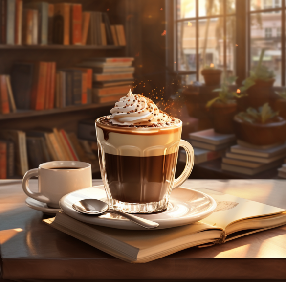
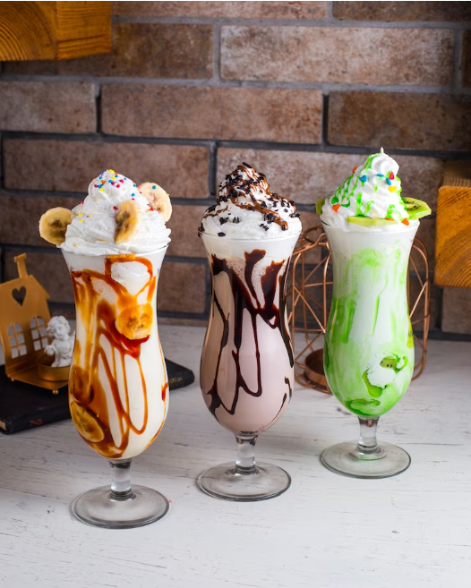

Faites comme chez vous !
« Heureux celui qui sait prendre son temps pour aller plus vite ! »
Proverbe inuit
Le temps d'un instant est considéré comme un endroit chaleureux et accueillant où les gens peuvent se
détendre, socialiser et profiter d'une bonne tasse de café.
Que ce soit pour travailler, étudier, discuter avec des amis ou simplement se relaxer, Le temps d'un instant offre un cadre convivial pour
tout le monde.
L'instant d'un rêve
Découvrez notre nouveauté du moment, un délicieux frappé au chocolat, unique comme vous !
Retrouvez également les chouchous
de nos habitués
Café Glassé

Savourez nos café raffraichissant aux café bio et lait végétaux de votre choix !
Waffle Frappucino
Pour les plus gourmands d'entre vous, le waffle saura égayer vos papilles avec ses touches de chocolat et ses des fruits de saison !
Matcha Latte

Optez pour un peu de douceur, les vertus du matcha vertus vous relaxerons, ameliora votre concentration et plus !